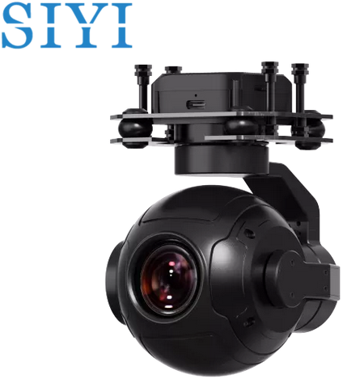
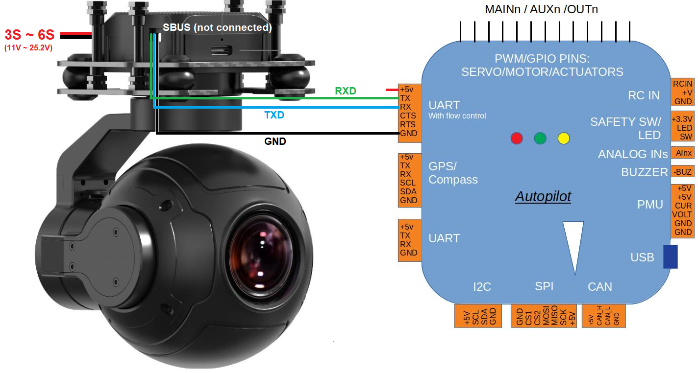
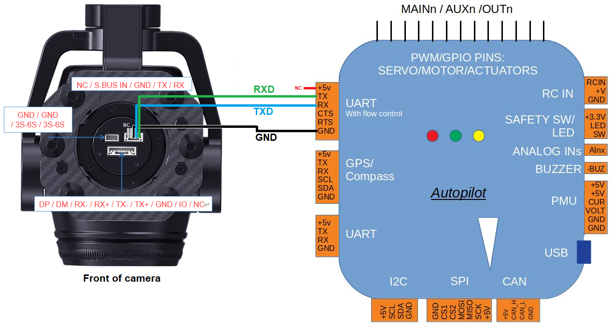
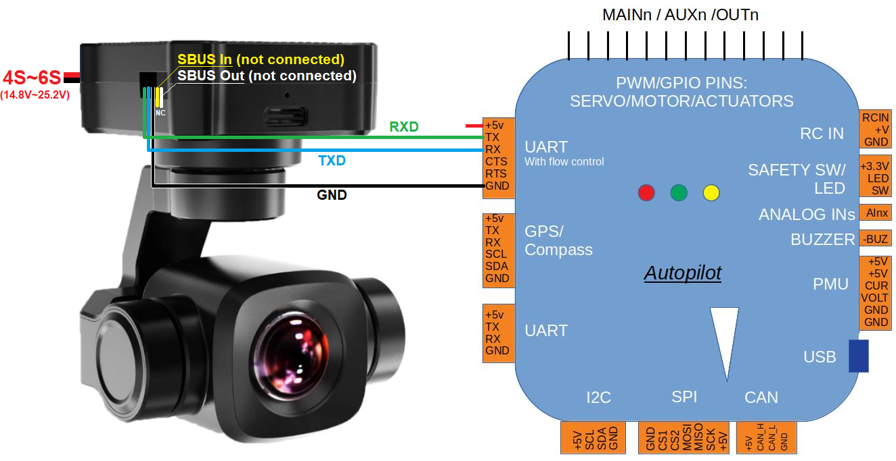

[copywiki destination=”plane,copter,rover”]
SIYI ZR10, ZR30 and A8 Gimbals¶
The SIYI ZR10, ZR30 and A8 are 3-axis gimbals and camera which can communicate with ArduPilot using a custom serial protocol.
Warning
Support for these gimbals is available in ArduPilot 4.3.1 (and higher)
Where to Buy¶
These gimbals can be purchased directly from SIYI
Connecting to the Autopilot¶
  {kind=link}
{kind=link}
{kind=link}
Connect the gimbal’s RX, TX and GND pins to one of the autopilot’s serial ports as shown above.
Connect with a ground station and set the following parameters. The params below assume the autopilot’s telem2 port is used and the Camera1 control instance,
SERIAL2_PROTOCOL to 8 (“SToRM32 Gimbal Serial”)
SERIAL2_BAUD to “115” for 115200 bps
MNT1_TYPE to “8” (“Siyi”) and reboot the autopilot
MNT1_PITCH_MIN to -90
MNT1_PITCH_MAX to 25
MNT1_YAW_MIN to -135
MNT1_YAW_MAX to 135
MNT1_RC_RATE to 90 (deg/s) to control speed of gimbal when using RC targetting
RC6_OPTION = 213 (“Mount Pitch”) to control the gimbal’s pitch angle with RC channel 6
RC7_OPTION = 214 (“Mount Yaw”) to control the gimbal’s yaw angle with RC channel 7
RC8_OPTION = 163 (“Mount Lock”) to switch between “lock” and “follow” mode with RC channel 8
Enable camera controls with one of the following AP version specific parameters
For AP4.3 (or earlier) set
CAM_TRIGG_TYPEto 3 / “Mount (Siyi)” to allow control of the cameraFor AP4.4 (or later) set CAM1_TYPE to 4 / “Mount (Siyi)” to allow control of the camera
Optionally these auxiliary functions are also available
RC9_OPTION = 166 (“Camera Record Video”) to start/stop recording of video
RC9_OPTION = 167 (“Camera Zoom”) to zoom in and out
RC9_OPTION = 168 (“Camera Manual Focus”) to adjust focus in and out
RC9_OPTION = 169 (“Camera Auto Focus”) to trigger auto focus
Warning
A8 does not support zoom at 4K recording resolution
Configuring the Gimbal¶
Download, install and run “SIYI PC Assistant” which can be found on the SIYI ZR10 web page’s Downloads tab
Ensure the gimbal is running a recent firmware. For ZR10 use 0.2.1 or higher. For A8 use 0.1.7 or higher.
{kind=link}
Control and Testing¶
See Gimbal / Mount Controls for details on how to control the gimbal using RC, GCS or Auto mode mission commands